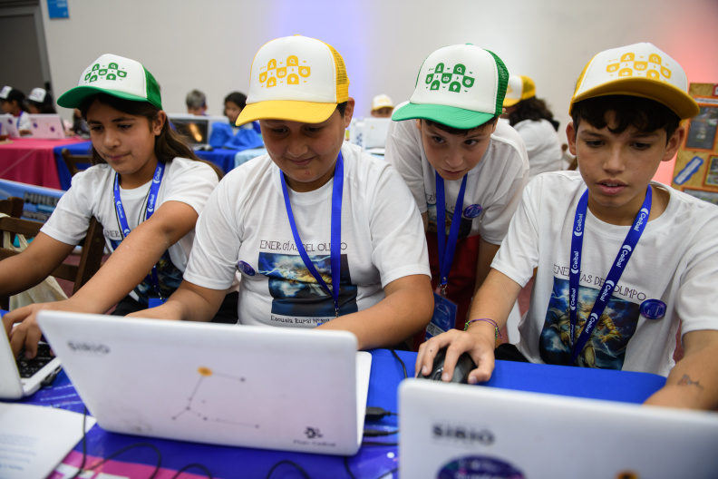

Nuestros programas

Alfabetización Digital
Capacitaciones básicas para jóvenes y adultos que buscan dar sus primeros pasos en el uso de computadoras, herramientas de ofimática e navegación segura por internet.
Programación e Inclusión Laboral
Cursos intensivos de desarrollo web y lógica de programación diseñados para brindar competencias técnicas reales que faciliten la inserción en el mercado de trabajo tecnológico.
Espacios Tecnológicos Comunitarios
Acondicionamiento y equipamiento de aulas en comedores y centros de barrio, garantizando conectividad a internet y acceso libre a equipos para el estudio y la búsqueda de empleo.
Nuestro impacto

- Personas alcanzadas
- 4.200 desde 2013
- Comunidades
- 18 municipios del conurbano
- Años de trayectoria
- 12 años de trabajo ininterrumpido
- Docentes capacitados
- 340 en el programa Escuelas Conectadas
Alcance de los Programa
| Programa | Sede principal | Participantes 2025 | Estado |
|---|---|---|---|
| Alfabetización Digital | Hurlingham | 1.200 | En curso |
| Programación e Inclusión Laboral | Morón | 850 | En curso |
| Mujeres en Tecnología | San justo | 650 | En curso |
| Espacios Tecnológicos Comunitarios | San Miguel | 1.500 | Finalizado |
| Total general de participantes | 4.200 | ||
Sumate
Formas de colaborar
- Donaciones mensuales o por única vez
- Donación de equipos informáticos en buen estado
- Voluntariado técnico y capacitaciones
- Difusión de nuestras campañas en redes sociales
Pasos para ser voluntario/a
- Completar el formulario de inscripción en línea
- Participar de una entrevista virtual con nuestro equipo
- Asistir a la jornada de inducción y capacitación
- Sumarte al equipo de trabajo en los centros comunitarios